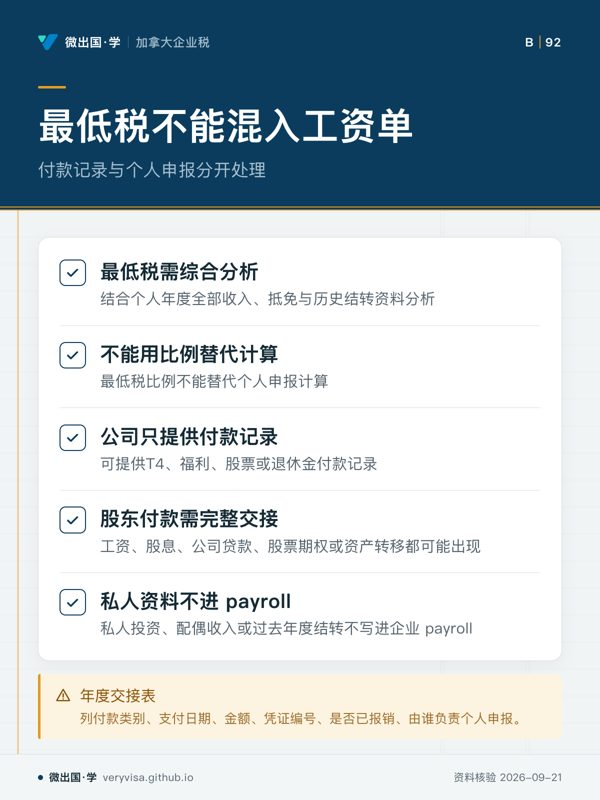
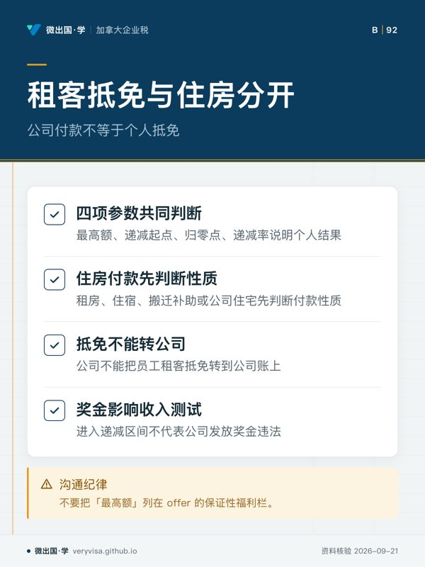
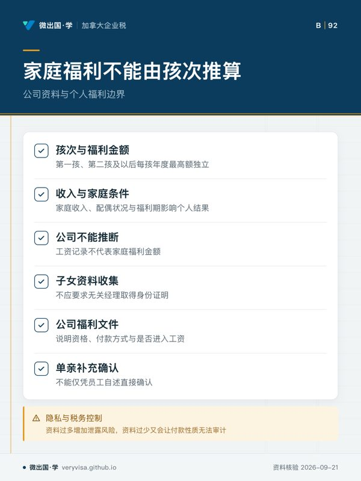

核实日期：2026-09-10｜适用税年：2026｜下一次复核：2026-11-30。本文讲的是 BC 省税减免、租客抵免和家庭福利在公司 payroll、员工福利与股东家庭资料中的边界。所有数值都是年度快照，不能脱离税年、资格条件和官方现行页面使用。
公司给员工发工资、提供住房或报销费用时，经常收到“我符合省税减免”“我有租客抵免”“我有几个孩子，所以请少扣一点”的请求。这些请求可能涉及个人申报或福利计划，并不自动成为公司的可扣费用或工资免税项目。公司要做的是识别支付性质、提供正确凭证、避免重复报销、保护家庭资料；个人是否符合抵免和福利资格由个人按年度规则判断。
一、省税减免是递减函数，不是固定奖金
这一条是 BC 省税减免最高额，是递减起点，是归零净收入，是递减率。四个单元必须一起读取。最高额只表示在满足条件且收入处于相应区间时的上限；递减起点说明何时开始减少；归零净收入说明何时不再有这项金额；递减率则决定从起点到归零点之间如何变化。公司不能把最高额写成每名员工固定可得的年度福利。
如果公司在 offer 中写“我们会替员工承担省税减免损失”，必须先明确这到底是工资保证、现金补偿、应税福利还是仅供参考的净薪资估算。把一个个人抵免的最高额塞进薪资宣传，会让员工误以为公司能够控制其配偶收入、家庭净收入或个人申报条件。正确写法应说明公司提供工资和福利事实，个人抵免由员工在年度申报中判断，任何模拟金额都要标注税年和假设。
财务模型要做敏感性测试，而非只放一个案例。至少测试低于递减起点、处于递减区间和超过归零净收入的三种情形，并把工资、奖金、股息、配偶收入和其他净收入作为不同输入。股东经理若同时领取公司工资和股息，公司的薪酬模型只能先正确记录两种付款，不应为了保持某个省税减免而人为拆分或延迟真实报酬。
二、最低税与结转抵免不能混进日常 payroll
这一条是 BC 最低税及结转抵免比例。最低税和结转问题通常需要结合个人年度全部收入、抵免与历史结转资料分析，不是 payroll 每次发工资时可以用一个百分比解决的项目。公司可以在员工请求时提供 T4、福利、股票或退休金付款记录，但不能用“最低税比例”替代个人申报计算，也不能保证某项结转一定可以在当年使用。
对股东经理而言，工资、股息、公司贷款、股票期权或资产转移可能在同一年度出现。若公司只看工资单，不把其他付款和凭证交接给个人，员工的税务顾问就无法判断是否触发最低税或历史抵免使用问题。反过来，个人不应要求公司把私人投资、配偶收入或过去年度结转写进企业 payroll。双方各自保存自己负责的资料，才不会在年末调整时重复或遗漏。
年度交接表应列出付款类别、支付日期、金额、币种、凭证编号、是否已报销、是否已在工资单处理，以及由谁负责个人申报。对于需要结转的金额，企业只记录自己实际知道并依法持有的付款事实，不在员工档案中保存超出目的的私人税表。这一条的比例须跟随 2026 税年和官方解释复核，不能把旧年度设置永久保留。
三、租客抵免与公司住房安排是两条线
这一条是 BC 租客抵免最高额，是 AFNI 递减起点，是 AFNI 归零点，是递减率。四者说明个人租客抵免会受收入与条件影响，不是企业提供住房时自动产生的雇主抵免。公司替员工租房、支付住宿、提供搬迁补助或向股东提供公司住宅，都必须先判断付款性质和应税福利，再考虑员工个人是否可能有租客抵免。
公司不能因为自己直接向房东付款，就把员工的租客抵免转到公司账上；也不能把租金收据当作没有其他条件的免税证明。若公司支付的是临时出差住宿，应记录出差地点、日期、商业目的和付款对象；若是长期住房或搬迁补助，应单独分析是否属于工资或福利。员工个人需要保存租约、付款记录、居住期间与收入资料，公司只取得处理自身付款所必需的信息。
租客抵免的收入测试尤其容易被奖金影响。员工在年初低于递减起点，年末因奖金、股息或配偶家庭收入变化而进入递减区间，并不意味着公司发放奖金违法或应替员工补足抵免。公司应按真实服务支付报酬，并在薪酬沟通中提醒净薪资估算使用的是哪一个税年、是否假设了其他家庭收入。不要把“最高额”列在 offer 的保证性福利栏。
四、家庭福利的孩次、收入期和公司资料
这几条分别是 BC 家庭福利第一孩、第二孩及以后每孩的年度最高额，是两组递减起点，是单亲年度补充最高额。孩次、家庭收入、配偶状况与福利期都可能影响个人结果。公司可以正确记录员工工资，不能从“第一孩”“第二孩”字段推断家庭福利金额，也不应要求员工把子女身份证明交给不需要它的经理。
员工问公司“能否把福利补贴写成孩子的省福利”，财务人员应把问题拆开：公司支付的是工资、应税福利、报销、家庭津贴还是一次性奖金？这些款项的工资和凭证处理不同；员工家庭福利则由相关公共计划根据个人申报资料计算。公司若确实提供 dependant benefit，应在计划文件中说明资格、付款方式、是否进入工资与可否追溯调整，不把公共福利最高额当成公司承诺。
单亲补充最高额不能由 HR 仅凭员工自述直接确认。家庭状况属于敏感资料，必须按目的收集、限制访问并在不再需要时按保留政策处理。工资系统只需要知道会影响合法扣缴的输入；公共福利系统或个人申报所需的全部家庭证明，不应无差别复制到公司共享盘。隐私和税务控制在这里是同一条链：资料过多会增加泄露风险，资料过少又会让公司付款性质无法审计。
五、把参数放回年度维护而不是永久模板
2026 年维护这组 TKU 时，版本表至少记录最高额、递减起点、归零点、递减率、适用福利期、来源、核实日期和复核日期。发生官方页面更新、福利期切换、员工住房政策改变或公司薪酬制度改版时，先找出受影响的讲解页、工资配置和福利说明，再逐项更新。旧年度的数字可以留在历史记录中，但不能无标签地继续出现在 2026 计算器里。
审阅人可用五个问题收尾：公司付款是什么性质？员工是否收到正确凭证？个人抵免是否被错误写成公司福利？收入递减和归零条件是否完整呈现？家庭资料是否只在必要范围内被收集？若答案依赖一个没有税年和核实日期的金额，控制尚未完成。
本文在 2026-09-10 核实，下一次复核为 2026-11-30。考试或培训材料可以帮助记住参数的结构，但实务应以当年官方规则、付款事实和个人资格为准；公司不能用一张福利宣传表替代年度税务判断。
本页知识卡
不看正文也能拿到这一节的核心内容：先看导读，再看图。点图放大，左右翻页。
- 先看先看四个单元，它们共同决定最高额如何变化。
- 易漏最高额只是符合条件时的上限，不代表公司可承诺的福利。
- 下一步查看讲解页，准备工资与福利沟通问题。

- 先看先看最低税分析范围，避免把它当工资参数。
- 易漏企业记录自己知道的付款事实，不保存超出目的的私人税表。
- 下一步查看知识卡，整理年度交接资料。

- 先看先看公司付款与个人抵免的边界。
- 易漏租金收据不是没有其他条件的免税证明。
- 下一步查看讲解页，整理住房付款问题。

- 先看先看孩次与金额这一格，判断哪些资料不能直接推福利。
- 易漏家庭状况属于敏感资料，收集和访问范围需按目的限制。
- 下一步查看讲解，整理福利付款性质问题找专业人士。